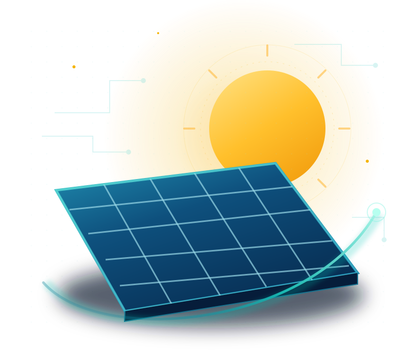
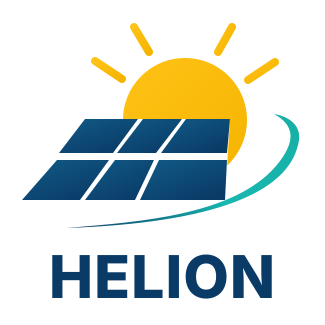

Analiza tu consumo
Identificar equipos, potencias y horas de uso para estimar cuánta energía necesita un espacio.
Datos que importan
Innovación solar al alcance de tus manos. Descubre cómo la luz del sol puede convertirse en decisiones inteligentes, con una visión de ingeniería clara, accesible y confiable.
¿Cuántos paneles y equipos necesito? Calcula tu sistema solar ↗

Una fuente inmensa de energía. Nuestra misión es entenderla y aprovecharla con responsabilidad.
Conoce nuestra visiónConsumo, paneles, inversor y una propuesta bien explicada. Una herramienta que estamos desarrollando paso a paso.
Explora cómo funcionaráLa energía solar es parte de una historia mayor. Descubre cómo se genera, transmite y distribuye la electricidad en nuestro Atlas.
Entrar al Atlas EléctricoLA SOLUCIÓN HELION
Unimos análisis eléctrico, ingeniería y una experiencia digital sencilla para convertir una idea en una propuesta solar comprensible.
Identificar equipos, potencias y horas de uso para estimar cuánta energía necesita un espacio.
Explorar combinaciones de paneles, inversores y baterías considerando sus características técnicas.
Presentar componentes, costos y estimaciones de ahorro en una propuesta fácil de comprender.
En desarrollo por etapas. Ya puedes explorar un dimensionamiento y una lista de materiales preliminares. La selección comercial definitiva y la cotización vinculante aún requieren un instalador.
UNA EXPERIENCIA MÁS SIMPLE
La visión de HELION es reunir cada paso en una sola herramienta, sin perder el rigor de los cálculos de ingeniería.
Conoce el propósito de HELIONEquipos, potencia y horas de funcionamiento.
Dimensionamiento y selección de componentes.
Inversión, ahorro estimado y reporte técnico-comercial.

NUESTRA ESENCIA
HELION nace de una idea sencilla: la energía solar no debería sentirse complicada. Queremos conectar el potencial del sol con herramientas que hagan la ingeniería más cercana.
Explora qué equipos necesita tu instalación, compara tres configuraciones y genera una lista de materiales para pedir cotizaciones reales.
Los resultados son preliminares y necesitan verificación técnica.
La energía sobrante puede entregarse a la red si existe un contrato de interconexión válido. Un sistema on-grid normal no garantiza energía durante apagones.
Introduce precios unitarios recibidos de proveedores para calcular un presupuesto. HELION no inventa precios ni promete disponibilidad.
| Equipo o servicio | Cantidad | Precio unitario (MXN) | Importe (MXN) |
|---|
Importes capturados por el usuario: no son ofertas comerciales ni incluyen automáticamente IVA, envío, permisos, adecuaciones, garantías o mano de obra salvo que se registren. El total solo será una cotización completa cuando todos los renglones tengan precios confirmados.
Convierten radiación solar en corriente continua. Rieles, anclajes, abrazaderas y sellado sujetan el arreglo con seguridad.
Convierten la energía a corriente alterna compatible con el uso del inmueble. La selección eléctrica depende de fichas técnicas y del servicio.
Conductores, conectores, seccionamiento, protecciones CA/CC, sobretensiones y puesta a tierra forman parte del sistema; no son accesorios opcionales genéricos.
Almacenan energía; para respaldo también se requiere electrónica compatible, sistema de gestión y cargas críticas separadas, según el diseño.
En sistemas conectados, la distribuidora instala el equipo de medición correspondiente tras el proceso de interconexión. No se compra un medidor privado como sustituto.
La cotización debe contemplar visita técnica, ingeniería, instalación por personal competente, pruebas, documentación, garantías y mantenimiento.
Son distribuidores con catálogo para México. Algunos trabajan principalmente con instaladores o integradores: no representan cotizaciones emitidas por HELION.
Una identidad de ingeniería y dos formas de descubrir la energía: nuestra visión solar y el sistema eléctrico de México.
La propuesta de ingeniería fotovoltaica que dio origen a HELION. El estimador preliminar y la lista de materiales ya están disponibles; la cotización formal requiere un instalador.
Explora el estimadorUna aplicación educativa con mapas, gráficas, simuladores y datos oficiales para explorar el sistema eléctrico.
Abrir Atlas EléctricoEL FUTURO TIENE UNA NUEVA ENERGÍA
HELION — Ingeniería solar clara y confiable.
Volver al inicio